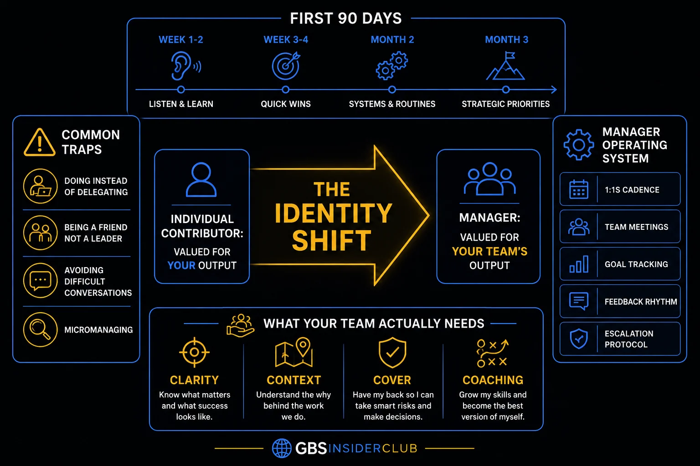

Pillar 7 · Cluster 1
The new manager transition in GBS
Moving from individual contributor to manager changes everything — your relationship with former peers, your success metrics, and the skills that made you successful. The first 90 days define your credibility.
Sound familiar?
Topic 01 · Role Transition
The peer-to-boss transition
Yesterday you were one of the team. Today you lead it. Pretending nothing changed is the fastest way to fail — reset the relationships early. The model is in THE FIX.
Peer on Friday.
Boss on Monday.
 M
MWeek one. Miguel assigns work to the friend he had lunch with every day for a year.
The friend laughs it off. The task misses its deadline.
Telling him off feels like betrayal. Saying nothing means the whole team sees the exception.
"If I act like the boss, I lose the friend. If I act like the friend, I lose the team."
He feels trapped — the boss and the friend cannot be the same person, but he is both.
You avoid the awkward reset conversation — and the ambiguity does more damage than the conversation ever could.
The transition is managed with one honest reset, done early.
The reset talk is awkward for ten minutes. The ambiguity it removes would have cost months.
The peer-to-boss transition in depth
Yesterday you were part of the team. Today you lead it. The fastest way to fail is to pretend nothing changed.
- Acknowledge the change explicitly — do not pretend the dynamic is the same; address it in your first team meeting
- Set expectations early — what will change (decision-making, information flow) and what stays the same (respect, collaboration)
- Accept that some friendships will shift — not every peer will be comfortable with the new dynamic, and that is normal
- Avoid the favoritism trap — giving special treatment to former close colleagues undermines your credibility with the entire team
- Seek feedback from your manager — the transition is as visible to leadership as it is to the team; stay aligned on expectations
Common traps — doing vs delegating, friend vs leader, micromanaging
Have the reset conversation with your closest former peer. Ten honest minutes this week.
Role reset. Now stop doing your old job.

The identity shift: from valued for your output to valued for your team's output
Topic 02 · Core Skill
Delegation — the art of letting go
You were promoted for doing the work. The new job is making others excellent at it — and doing it yourself is now a failure mode. The model is in THE FIX.
You were the best at the work.
That skill is now a trap.
 P
PA tricky reconciliation arrives in the queue. Peter knows he can finish it in an hour.
Teaching someone would take three hours. He does it himself. Again.
Six months later his evenings are full, and nobody on the team can do the task without him.
"Every task I keep is a skill my team never learns."
He feels stretched — and realizes the habit of doing it himself created the problem.
Doing it yourself feels faster every single time. Over a year, you end up with a team that depends on you for everything.
Delegation is an investment with three rules.
The three-hour teaching investment repays weekly. By quarter-end, the tricky reconciliation has three owners.
Delegation in depth — the letting-go framework
You got promoted because you were excellent at the work. Your new job is making others excellent at the work. Doing it yourself is now a failure mode.
Define the outcome, not the method
Tell your team what success looks like, not how to achieve it step by step. Prescribing the method prevents learning and signals distrust.
Match the task to the person
Consider skill level, development goals, and current workload. Delegation is developing, not offloading.
Set checkpoints, not surveillance
Agree on milestone reviews where you check progress without hovering. The cadence depends on experience — daily for new starters, weekly for experienced team members.
Accept imperfection
The first time someone does a task you used to own, it will not be as good as when you did it. That is the cost of scaling. Coach the gap; do not take it back.
Give credit publicly
When delegated work succeeds, credit the person who did it. When it fails, own the failure as the manager who delegated it.
- The test of effective delegation: if you disappeared for a week, would your team know what to do and keep delivering? If not, you are directing, not delegating.
- New managers who keep doing the technical work they were promoted from create a bottleneck at the top and rob their team of development opportunities.
What your team actually needs — clarity, context, cover, coaching
Pick one task you keep because you are fastest. Delegate it with a defined outcome and one checkpoint.
Delegating buys you time. The first 90 days decide what you buy with it.
Topic 03 · Onboarding Yourself
The first 90 days — building credibility
The first 90 days set the precedent for your management style, decisions, and reliability. The team is watching — design what they see. The model is in THE FIX.
Your team is deciding
who you are as a boss.
Day 10. Miguel realizes the team watches everything he does and draws conclusions from it.
He cancels one 1:1 (one-on-one meeting) — the team thinks: "he does not prioritize us."
He handles one escalation calmly — the team thinks: "he protects us."
Every small action sends a message, whether he means it to or not.
"They do not remember what I said once. They remember what I do every day."
He feels observed — and starts choosing his actions on purpose, because the team will copy them.
You treat the first 90 days as survival — just getting through it. Your team treats them as the final answer to the question: what kind of manager is this person?
Ninety days, three phases, each with one job.
At day 90 the team can predict him — and predictability is the first name of trust.
The first 90 days in depth
Your team is watching closely. The first 90 days set the precedent for your management style, your decision-making, and your reliability.
- Days 1-30 (Listen): One-on-ones with every team member. Understand their work, frustrations, and career aspirations. Do not make changes yet.
- Days 31-60 (Assess): Identify the 2-3 most impactful improvements. Build the business case. Align with your manager on priorities.
- Days 61-90 (Act): Implement the first change. Show the team that listening led to action. Communicate the rationale transparently.
- Throughout: Be consistent. Show up on time. Follow through on commitments. Small reliability signals build trust faster than grand gestures.
First 90 days — listen, quick wins, systems, strategic priorities
Whatever your day count: book the missing 1:1s this week. Listening is never too late to restart.
The team reads your actions. They also read your mood.
Topic 04 · Self-Management
Self-awareness and stress management
A manager’s emotional state is contagious. Managing your energy and composure is a professional skill, not a personality gift. The model is in THE FIX.
Your stress has an audience.
All of them report to you.
 P
PA difficult steering call ends. Peter walks back to his team. His face is tense and he gives short, unfriendly answers to the first two people who speak to him.
Within an hour the whole team is quiet. Two people postpone questions they needed answered today.
Nobody knows what happened on the call. But everybody felt the mood change and pulled back.
"I did not say a word about the call. My face and my tone said it for me."
He feels responsible for a bad atmosphere he did not mean to create.
You think staying calm is your private business. In a lead role, your mood sets the mood for the whole team.
Emotional management is a buffer function — pressure comes down through you, filtered.
He puts a ten-minute break after every difficult call. The team gets the news without the stress.
Self-awareness and stress management in depth
Your emotional state is now contagious. When the manager is stressed, the team feels it. Managing your energy and composure is a professional skill, not a personal luxury.
- Self-awareness — recognize your stress signals and triggers before they affect your behavior and decisions
- Self-regulation — pause before reacting; the response you send after 10 minutes of thought is almost always better than the one you would have sent immediately
- Empathy — understand that your team members have pressures and contexts you do not see; ask before assuming
- Social skill — navigate conflict, give feedback, and build relationships across cultural and hierarchical lines
- Motivation — connect your daily work to a purpose larger than hitting targets; this sustains you through difficult periods
Identify your top stress leak signal. Tell one trusted person to flag it when they see it.
You steady. Cluster 2: now run the machine.
Relationships shift the moment you step into a leadership role — former colleagues communicate differently and watch more closely. That's a normal part of the transition, not something to take personally.
- →Treat everyone consistently from day one — this prevents any perception of favoritism before it can take root.
- →Resist the urge to over-control — it's natural to feel the pressure of accountability, but the best new managers absorb that pressure rather than pass it down unfiltered.
- →Give your team clear direction, then trust them to deliver.
- →The first 90 days set the tone for your leadership brand — and that brand sticks. Make it one your team wants to follow.
Reference
Glossary
Full glossary at the GBS Insider Club Field Guide.
- Watkins, Michael — The First 90 Days, Harvard Business Review Press, 2003
- Goleman, Daniel — Emotional Intelligence, Bantam Books, 1995
- Gallup — State of the American Manager, 2024
- McKinsey — Developing new-leader capabilities at scale, 2024
Knowing the frameworks is the entry ticket. Applying them — visibly, at your actual job — is what gets you promoted.
The GBS Insider Club Career Playbooks turn this theory into a guided 90-day program for your role: self-assessment, practical exercises, templates, and Julian's unfiltered practitioner playbook.
Explore the Career Playbooks → Back to Leadership and People